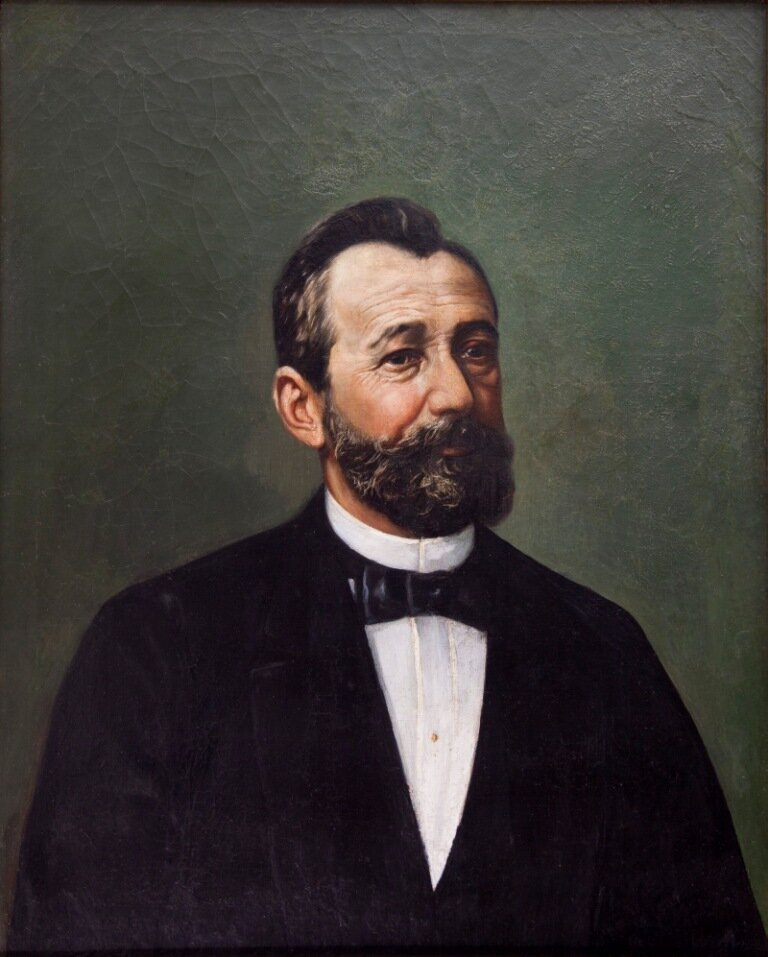

Como a erva-mate se desenvolveu?
A riqueza da erva-mate no final do século XIX transformou o Sul do Brasil ao financiar palacetes ecléticos que abandonaram a simplicidade colonial em favor de mármores, vitrais e detalhes importados da Europa. No site, essa história ganha vida ao conectar a opulência dos barões ao impacto urbano, usando fotos de época, linhas do tempo e mapas que mostram como a produção do "ouro verde" ergueu ícones arquitetônicos e modernizou as cidades.

Como esse tema se desenvolveu?
A arquitetura dos barões da erva-mate foi o reflexo direto de uma profunda revolução econômica e social no Paraná entre a segunda metade do século XIX e as primeiras décadas do século XX. Antes da ascensão do mate, o cenário urbano paranaense era dominado por construções coloniais simples e funcionais, feitas predominantemente de taipa. Com a explosão das exportações da erva para a América do Sul, os donos de engenhos acumularam grandes fortunas e passaram a exigir residências que traduzissem seu novo status e prestígio social. Essa busca por afirmação levou à europeização das cidades, com destaque para Curitiba. O estilo colonial deu lugar ao Ecletismo, uma tendência que misturava referências neoclássicas, neobarrocas e Art Nouveau. O luxo das construções revelava-se no contraste entre materiais nobres importados da Europa — como vitrais franceses, estátuas de cerâmica portuguesa, espelhos e papéis de parede — e a riqueza da matéria-prima local, representada principalmente pelo uso da madeira do pinho-do-paraná nos pisos, forros e entalhes. A chegada de engenheiros, arquitetos e mestres de obras imigrantes garantiu o acabamento refinado das fachadas e os detalhados trabalhos de pintura em estuque nos interiores. Esse boom produtivo e arquitetônico transformou a geografia do estado. Em Curitiba, vias como a Alameda Comendador Araújo e a Avenida Marechal Deodoro tornaram-se o endereço dos opulentos palacetes da elite. No litoral, cidades como Paranaguá e Antonina viram surgir casarões, armazéns e infraestruturas portuárias financiadas pelo comércio do mate, ao mesmo tempo em que a própria arquitetura industrial se modernizava com grandes engenhos de ferro e tijolos. Hoje, esses palacetes deixaram de ser residências privadas e transformaram-se em museus e centros culturais, como o Solar do Barão e o Palacete dos Leões, preservando a memória visual do período de maior transformação urbana da história paranaense.

Arquitetura
A arquitetura vai além de erguer edifícios: ela molda a forma como vivemos e registramos nossa história. Ao unir arte, engenharia e funcionalidade, cada construção preserva a identidade cultural de uma época e influencia diretamente nosso bem-estar, garantindo espaços com melhor iluminação, ventilação e acessibilidade. Além disso, o planejamento urbano organiza as cidades de forma sustentável, enquanto a valorização do patrimônio movimenta a economia e o turismo local.

Curiosidades
Curiosidade 1
O Movimento Paranista e o Design do Cotidiano: Na década de 1920, artistas como Lange de Morretes promoveram o "Paranismo", um movimento que buscava criar uma identidade visual única para o estado. Eles transformaram ramos e folhas de erva-mate (junto com o pinheiro-do-paraná) em padrões estilizados de Art Nouveau. Esses desenhos estampavam desde calçadas de petit-pavé e fachadas até embalagens de latas de chá, rótulos e baralhos.
Curiosidade 2
A Ilustração da "Lenda do Mate": O famoso pintor e ilustrador paranaense Poty Lazzarotto retratou em diversos painéis e murais públicos a lenda indígena da Caá-Yari (a deusa da erva-mate). Uma de suas obras mais emblemáticas sobre o tema é o enorme painel em azulejos na Praça das Nações, em Curitiba, que imortaliza os ciclos de colheita, o transporte em mulas e os rituais do mate na história local.